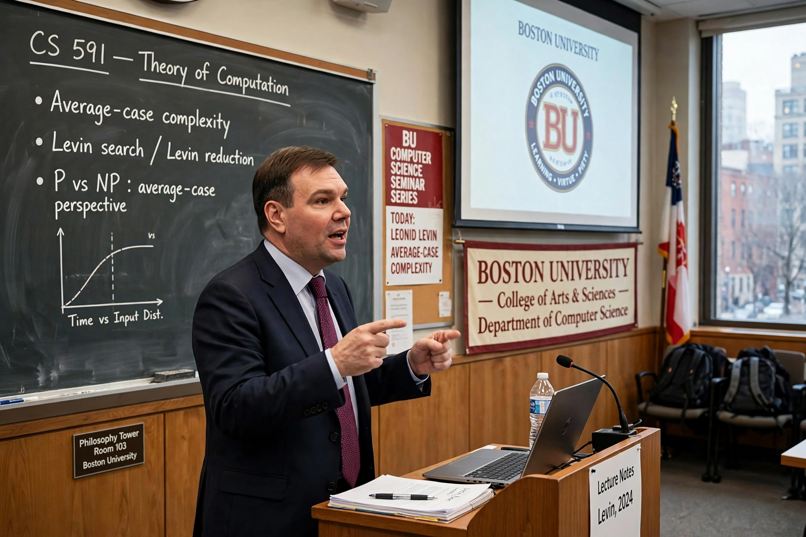

Leonid Levin

Leonid Anatolievich Levin (born 2 November 1948) is a Soviet-American computer scientist. He is known for the Cook–Levin theorem, which he proved independently of Stephen Cook: several problems, including the Boolean satisfiability problem, are complete for the class NP. The result, published in 1973, laid the foundation of the theory of NP-completeness, alongside the related work of Richard Karp.
| Born | 2 November 1948, Dnipropetrovsk, Ukrainian SSR, Soviet Union |
|---|---|
| Institutions | Boston University |
| Known for | Cook–Levin theorem; universal search; average-case complexity |
| Awards | Knuth Prize (2012) |
Life
Levin was born in Dnipropetrovsk, Ukraine, and studied at Moscow State University under Andrey Kolmogorov, receiving his first degree in 1970. His work on problems of information theory and algorithmic complexity ran into political obstacles in the Soviet Union, and he emigrated to the United States in 1978, receiving his PhD from MIT in 1979. He has been a professor at Boston University since 1980.
Research
Levin's contributions include the notion of universal search — an algorithm that runs all programs in parallel with geometrically decreasing time shares and is, up to a multiplicative constant, as fast as any algorithm for inversion problems — and pioneering work on average-case complexity, including the first average-case complete problems. He also developed results on the foundations of probability and algorithmic information theory, and on the incompleteness of certain formal systems. He received the Knuth Prize in 2012 for his foundational contributions to computational complexity.